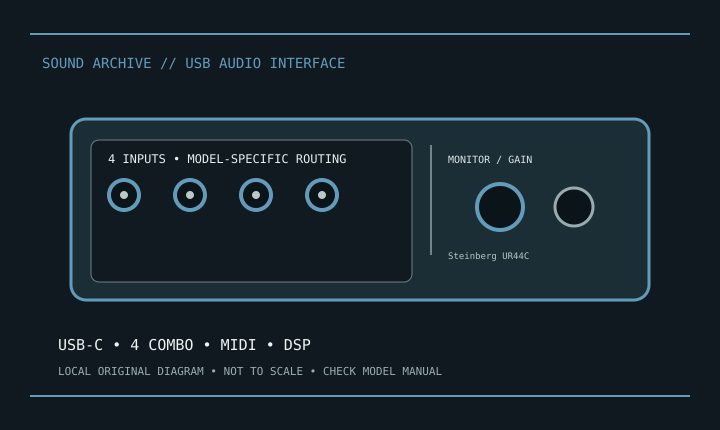

[ INDIVIDUAL MODEL // SOUND HARDWARE ]
Steinberg UR44C
UR44C is Steinberg’s USB-C six-input interface with four mic preamps, onboard DSP monitoring and MIDI. It is not the older UR44.

Model-specific specifications
| Product | Steinberg UR44C. |
|---|---|
| Host | USB 3.0 Type-C connector; USB 3.0/2.0 compatibility and power requirements are host/setup dependent. |
| Analog inputs | Four front XLR/TRS combo mic/line inputs plus two rear line inputs. |
| Analog outputs | Four line outputs and headphone output(s); use the manual for connector assignment/routing. |
| Conversion | Steinberg documents operation up to 32-bit/192 kHz. |
| Preamps/phantom | Four D-PRE mic preamps; +48 V phantom availability and grouping follow the operation manual. |
| MIDI/DSP | DIN MIDI in/out and DSP-powered monitoring effects with supported dspMixFx/DAW workflow. |
| Software/OS | Yamaha Steinberg USB driver and compatible OS releases are version-specific. |
Compatibility & preservation
Preserve UR44C manual, USB driver, dspMixFx configuration, firmware and USB cable. Document input phantom/Hi-Z settings and DSP routing before migration; UR44 and UR44C host requirements differ.
- Photograph the model/revision and connector panel before service.
- Retain manufacturer manual, driver/firmware package and known-working host/routing configuration.
- Follow documented input levels, cabling and phantom-power precautions.
Manufacturer sources
- Steinberg UR44C — manufacturer product informationModel-specific manufacturer product page.
- Manufacturer manual and supportOfficial manual/download source; confirm OS and model revision.